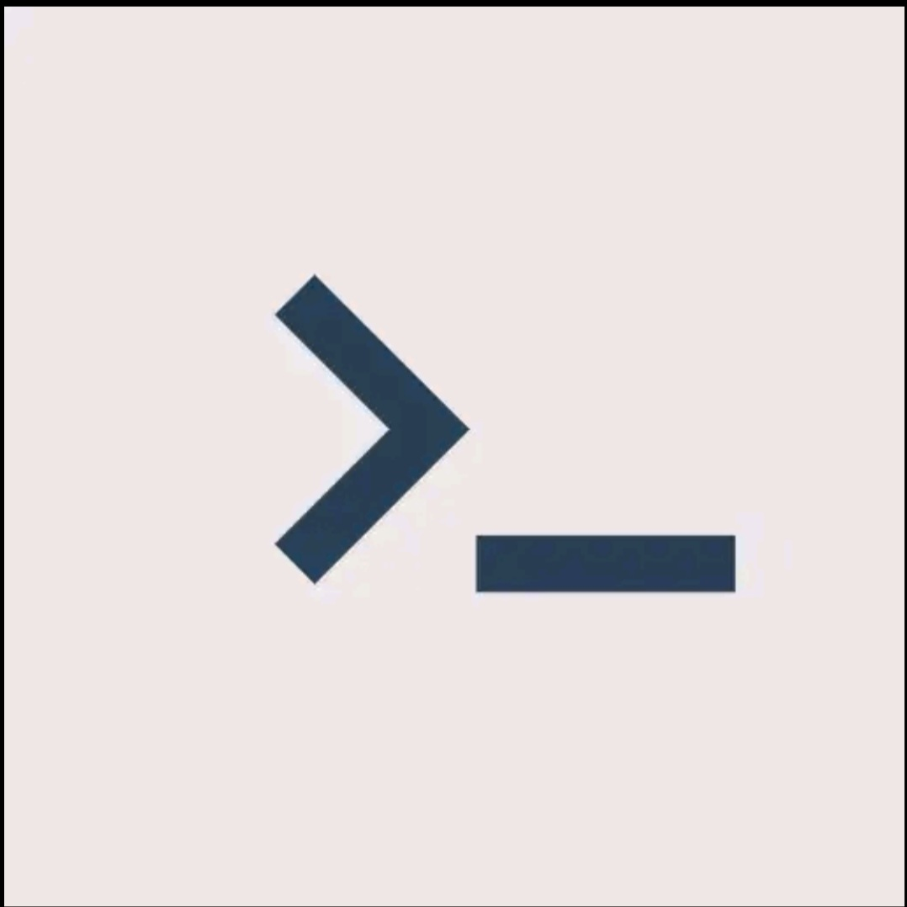

Whether you're a web developer, designer, blogger, or someone who simply wants to take control of their online presence, a mobile HTML editor unleashes a world of possibilities. With a mobile HTML editor, like Treb edit you can effortlessly tweak the layout, experiment with colors, publish your website and even debug code, all from your smartphone.

Treb edit-A worthy mobile Html,Css & JavaScript editor
TrebEdit is a mobile HTML editor designed for web developers and beginners. With this app, you can write HTML codes and design websites directly on your device.
Features:
- The built-in in-app browser, called Html Viewer, allows you to easily view your code as you work on your web projects.
- You can export projects ito your device.
- Text editor for writing HTML codes
- Html viewer for easy code viewing
- workspace for easy organisation of code
- Get source code feature
- JavaScript console for debugging
- Learning resources to improve coding skills in HTML, CSS, JavaScript.
Think about the convenience and productivity gains this brings. Instead of waiting to get back to your desk or carrying a bulky laptop everywhere, you can seize every moment of inspiration or respond swiftly to urgent website changes. Picture yourself attending a conference or meeting, where you want to capture the essence of the event and update your website with fresh content in real-time. With a mobile HTML editor, you can do just that, ensuring your online presence remains dynamic and engaging, all while being present in the moment.when inspiration strikes got to